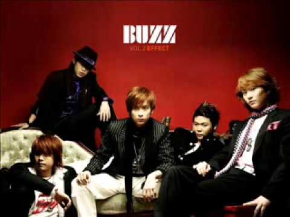

이름 : 버즈
(Buzz)
멤버 : 김예준 (리더, 드럼), 윤우현 (기타),
신준기 (베이스), 손성희 (기타), 민경훈 (보컬)
소속사 : 인넥스트트렌드
데뷔 : 2003년 1집 앨범 [Morning Of Buzz]
사이트 :
V LIVE
,
페이스북
,
스케줄
대표곡
가시
겁쟁이
나에게로 떠나는 여행
남자를 몰라
음원 감상(유튜브)
(재생되지 않을 경우, 하단에 YOUTUBE.COM을 클릭하여 유튜브에서 보시길 바랍니다.)